Сейчас страница открыта во встроенном браузере Telegram — здесь нельзя скачать файл скрипта.
Нажми внизу справа значок компаса 🧭 — страница откроется в Safari, и всё заработает:
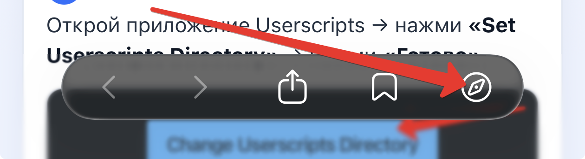
Скрипт ловит код напрямую, минуя тормозной сайт, и присылает QR тебе в Telegram. Ставится один раз.
📱 Какой у тебя телефон?
1 Скачать приложение Userscripts
Поставь из App Store бесплатное приложение Userscripts.
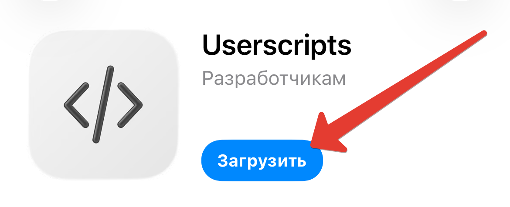
2 Выбрать папку
Открой приложение Userscripts → нажми «Set Userscripts Directory» → нажми «Готово».
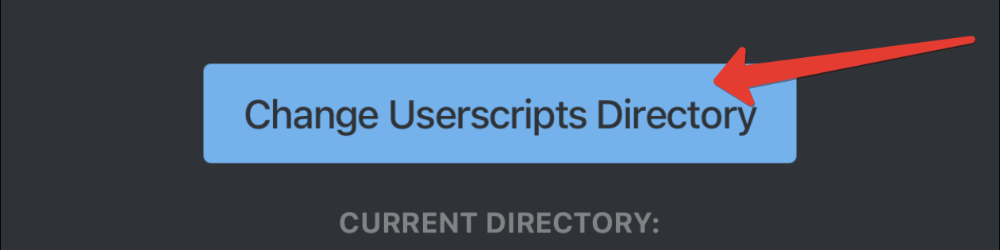
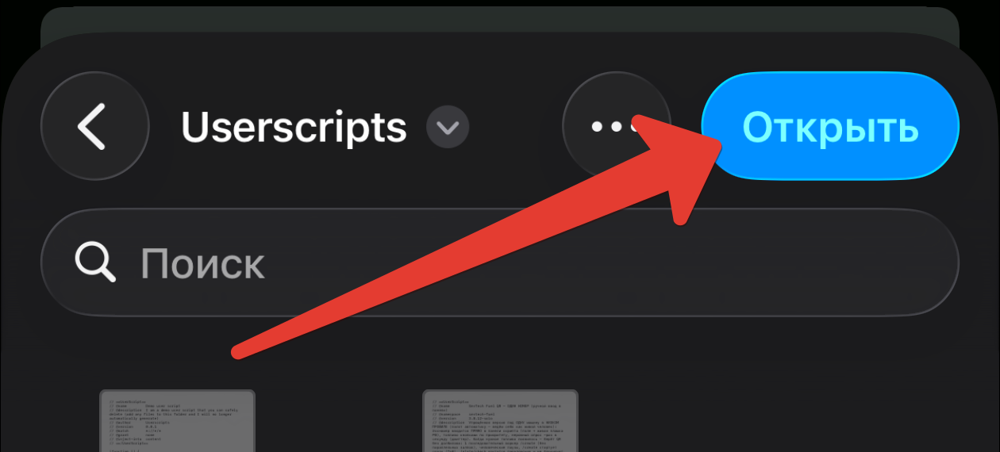
3 Включить Userscripts
Настройки iPhone → Safari → Расширения → Userscripts → включи «Использование расширения».
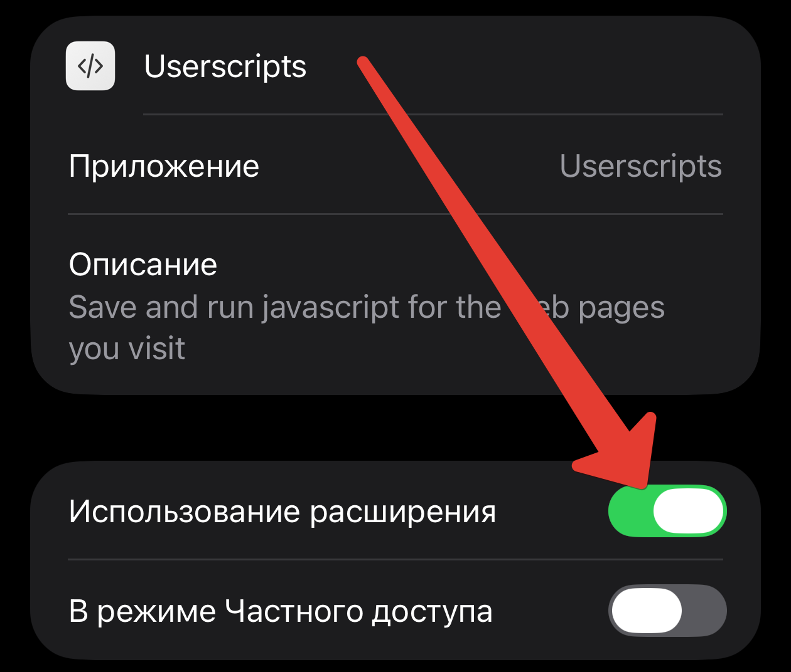
4 Скачать скрипт
Сохранит файл solo.user.js (в Файлы → Загрузки).
5 Перенос скрипта
Открой «Файлы» → найди скачанный solo.user.js → перемести в папку Userscripts.
6 Включить скрипт
Открой Safari → значок расширений (слева адресной строки):
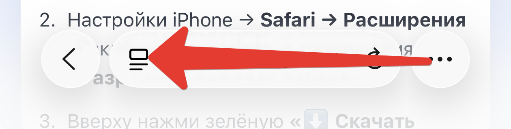
→ «Управлять расширением»:
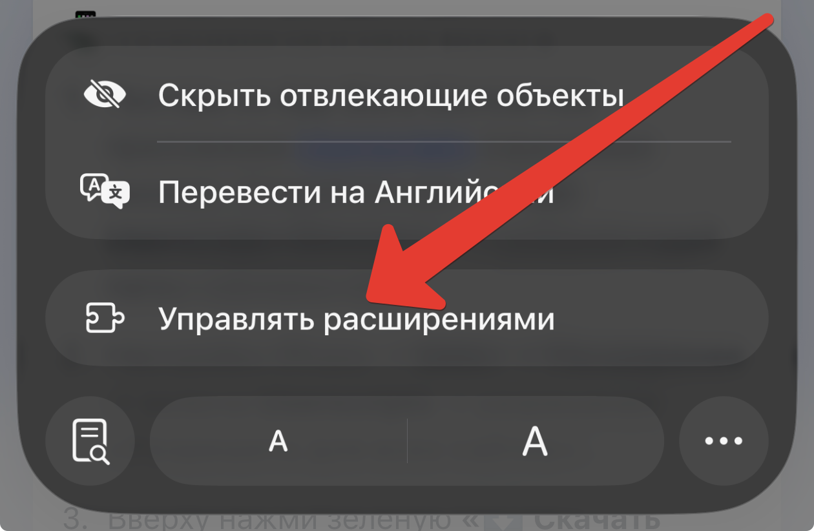
→ включи Userscripts и сохрани:
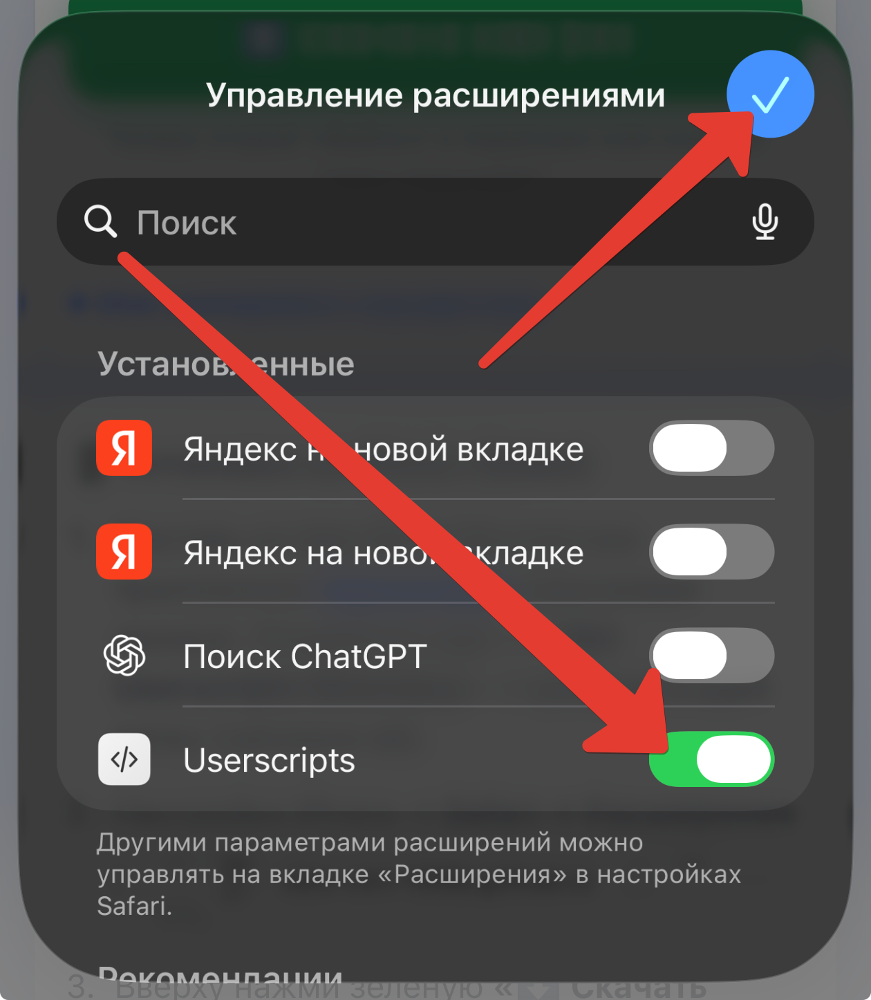
7 Зайти в MAX в браузере
В этом же Safari открой web.max.ru и войди под своим номером телефона — тем, на который получаешь коды на топливо.
⚠️ Нужна именно веб-версия в браузере, а не приложение MAX — скрипт работает только в браузере.
8 Открыть бота раздачи
Перейди в бота СевТех. Если раньше он не был запущен — найди его через поиск по юзернейму: fuel_92_bot — нажми, чтобы скопировать
Если бот предложит «Запустить» — нажми.
9 Открыть миниапп
В чате бота нажми кнопку запуска приложения («Открыть» / кнопка снизу).
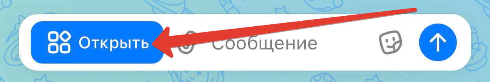
10 Поделиться номером
Нажми «Поделиться» — пройдёт авторизация по номеру телефона на сайте СевТех.
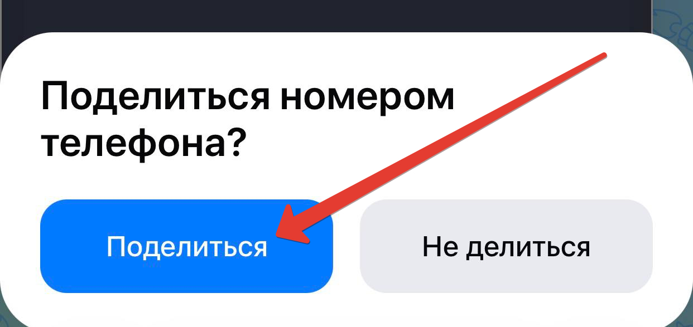
11 Верификация
При первом заходе скрипт запросит код верификации. Введи свой код (показан вверху этой страницы или в боте «Заправыч») и нажми «Подключить».
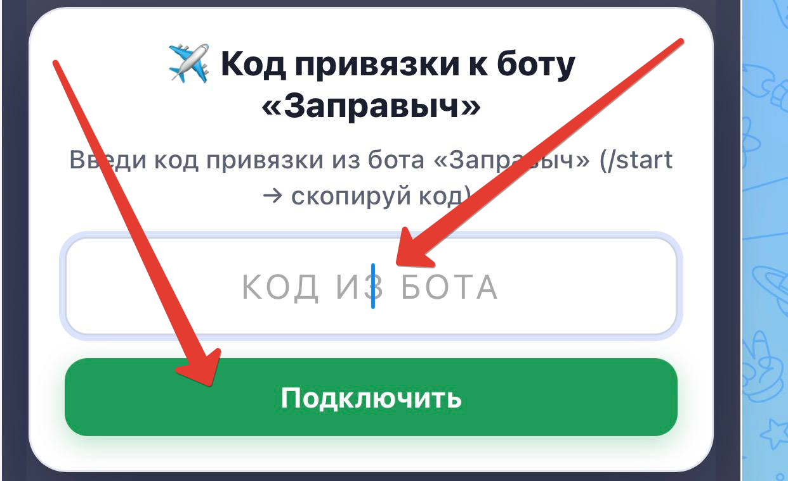
12 Номер авто и топливо
В открывшемся окне введи госномер своего авто и выбери топливо. Рекомендуем выбрать несколько видов — так выше шанс успеха. Жми по очереди: порядок нажатий = приоритет. Затем «Старт».
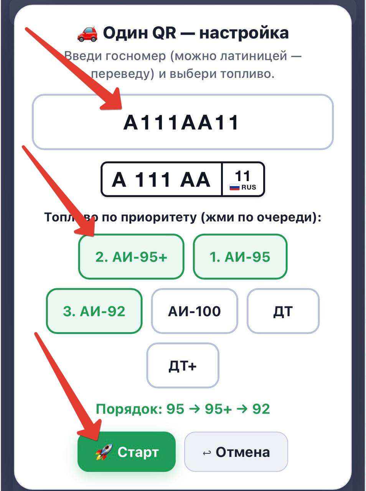
✅ Готово!
Если всё сделано верно — появится бейдж «⌛ жду топливо…».
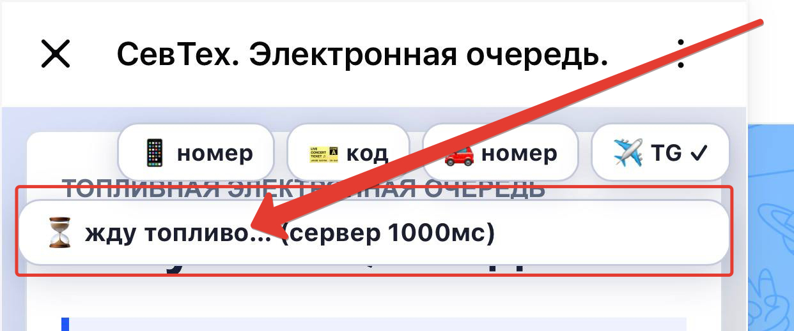
Когда в раздаче появится топливо, скрипт сам попробует взять код. После успеха ссылка на QR придёт тебе в бота «Заправыч» в Telegram.
📌 Важные рекомендации
🧭 Кнопки панели
📱 номер — повторно отправить номер телефона (если слетела авторизация в MAX).
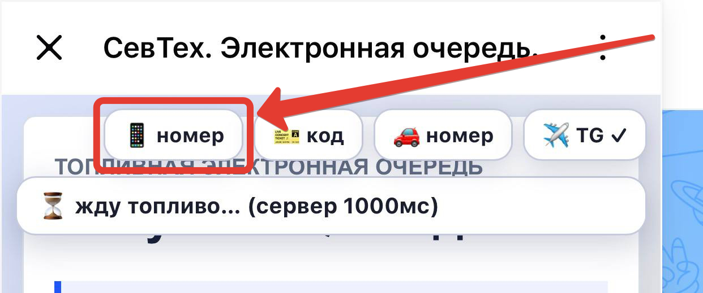
🎫 код — посмотреть полученный QR-код (если он уже получен).
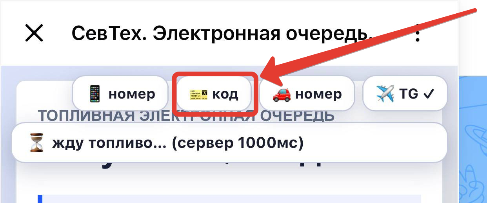
🚗 номер — посмотреть или изменить номер авто и топливо.
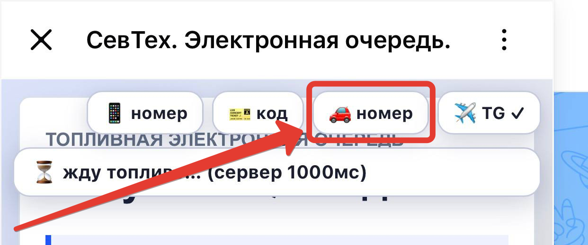
✈️ TG — код верификации (вводится при первом запуске). Галочка ✓ значит привязка к боту есть.
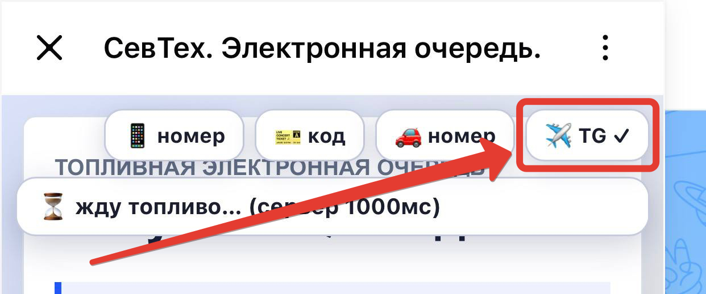
🛟 Когда код получен — можно отключить
Чтобы не переживать, что скрипт работает в браузере постоянно — после получения кода отключи расширение. Это глушит его полностью.
⚠️ Перед следующим получением кода включи его обратно тем же тумблером — иначе скрипт не сработает.
Safari → значок расширений → «Управлять расширениями» → тумблер Userscripts (вкл/выкл):
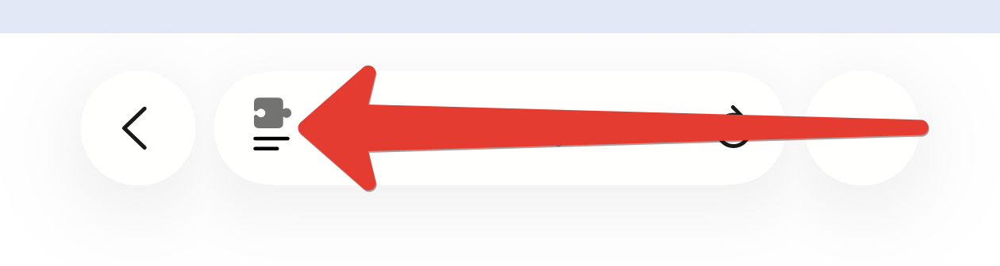
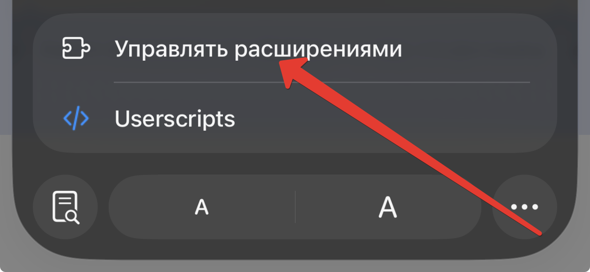
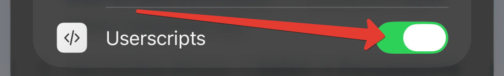
🤖 Установка на Android (Firefox)
Скрипт обновляется сам. Вопросы — к тому, кто дал ссылку.